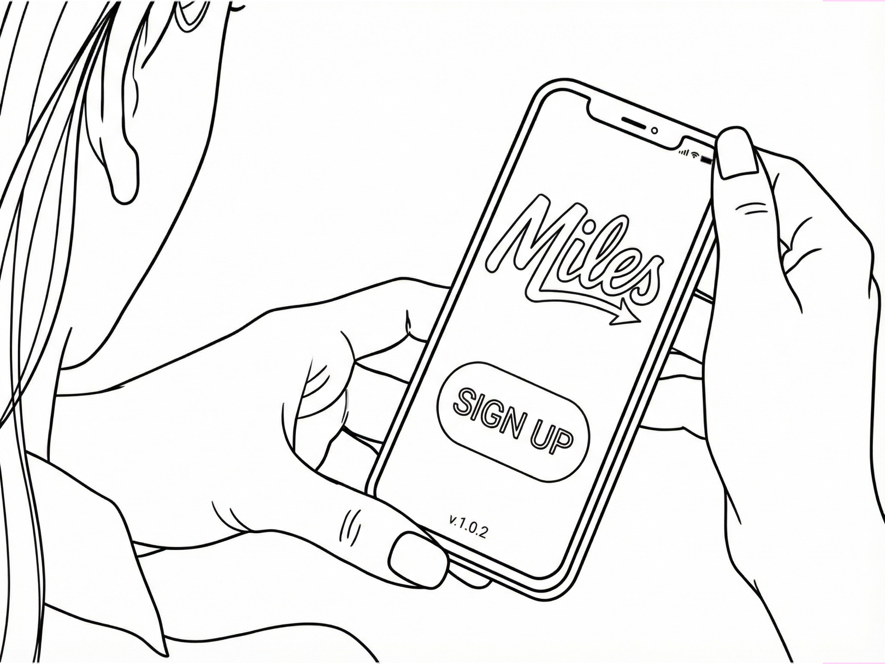
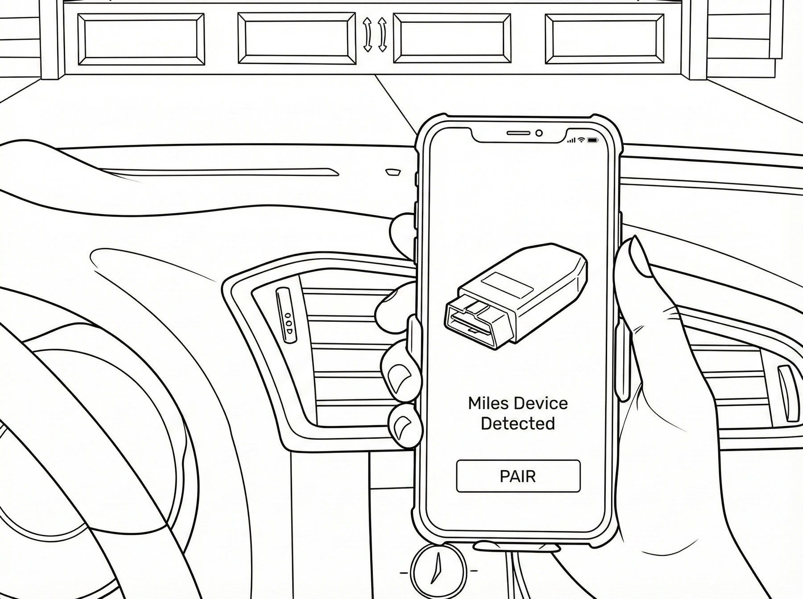
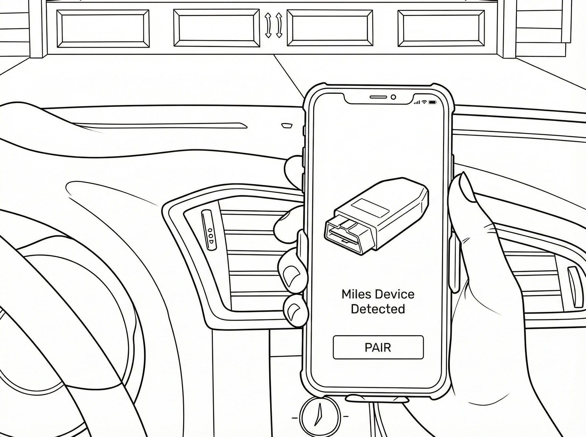
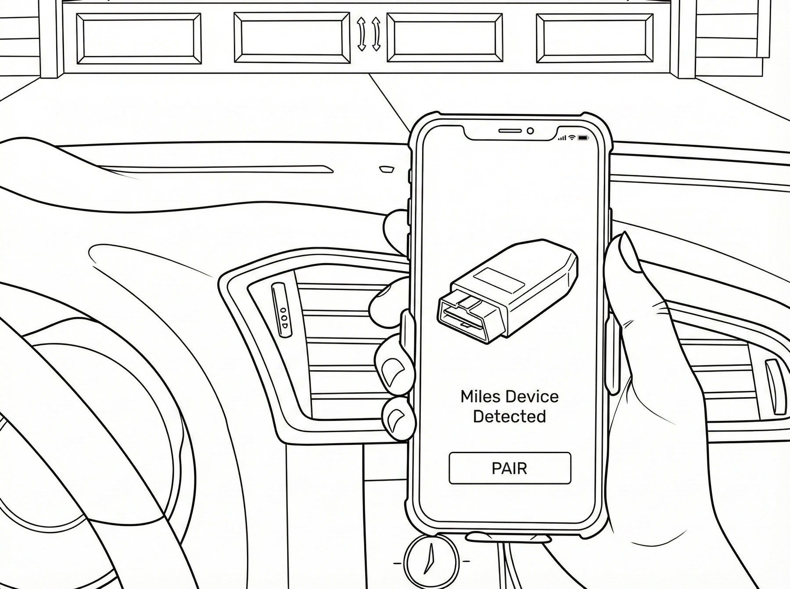

 


1
Setup
Users in this step
👤 User Goal
Get the dongle installed and connected once, confidently, with minimal effort
✋ User Actions
- Unbox package, review contents and quick-start guide
- Download app, create account, grant permissions (BLE, notifications)
- Add payment method (collected early, while indoors; bypassed for users who purchased device + subscription on website)
- Associate a primary driver with the device (required — trips are attributed to this driver unless told or detected otherwise)
- Optionally add secondary drivers; account owner can "send invite" to other users but invite acceptance is not required (important for SMB owners where the driver may not have app access)
- Go to car — app guides user to OBD-II port location for their vehicle
- Scan QR code on device to link it to account
- Plug in dongle and start ignition (order TBD with vendor)
⚡️ Miles Actions
- Capture email at sign-up for abandoned-setup recovery
- Bind device → account via QR scan + run firmware check/update
- Dongle powers on from OBD + confirms "alive"
- Read VIN automatically from OBD-II; fall back to camera scan if unsupported
- Pull vehicle data from OBD-II: make/model, vehicle status, location, diagnostics — gives instant feedback that Miles is plugged in and has contextual awareness of the car before the first trip
- Establish baseline connectivity + readiness to detect trips
- Begin 21-day free trial period
⚙️ Touchpoints
- App onboarding (indoors)
- Payment method collection
- Primary driver setup + optional secondary driver invites
- QR code scan
- OS permission prompts
- In-car install guided by app
- Vehicle data confirmation screen (VIN, make/model, status)
- Quick-start guide
- Help center
Emotion
😬 Cautious optimism → mild anxiety
Pain Point
"Am I doing this right?" — OBD port location, compatibility uncertainty, too many steps, fear of breaking something
Opportunity
Indoor-first flow: maximize setup before going to the car (billing, driver assignment, permissions); show vehicle data immediately after plug-in as proof Miles is working; app guides to OBD-II port by vehicle; instant "device detected" reassurance; email capture enables follow-up if setup abandoned; 21-day trial removes commitment anxiety